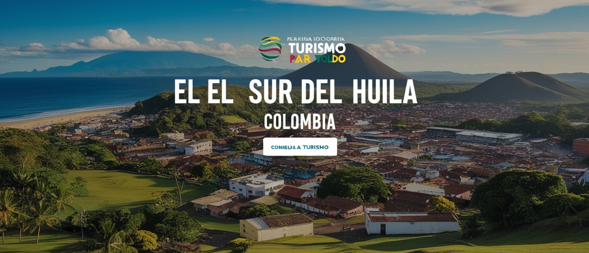
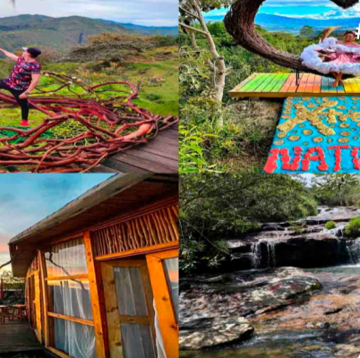
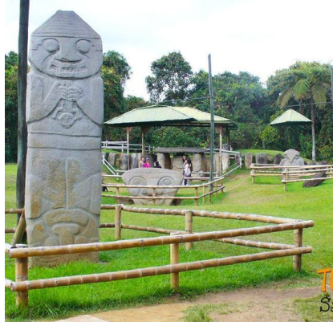
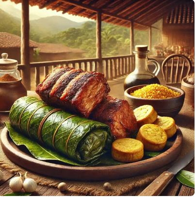

Descubre los tesoros escondidos del sur de Huila. Aquí encontrarás las maravillas naturales, la riqueza cultural y las experiencias auténticas que solo esta región puede ofrecerte.


Desde las misteriosas estatuas de San Agustín hasta el desierto surrealista de la Tatacoa, el sur de Huila ofrece escenarios maravillosos que enamoran a todos los visitantes.

Sumérgete en la historia de las civilizaciones antiguas con el Parque Arqueológico de San Agustín, un sitio reconocido como Patrimonio de la Humanidad por la UNESCO.

Descubre los sabores únicos de la región, desde el asado huilense hasta bebidas tradicionales como el café y la cholupa.